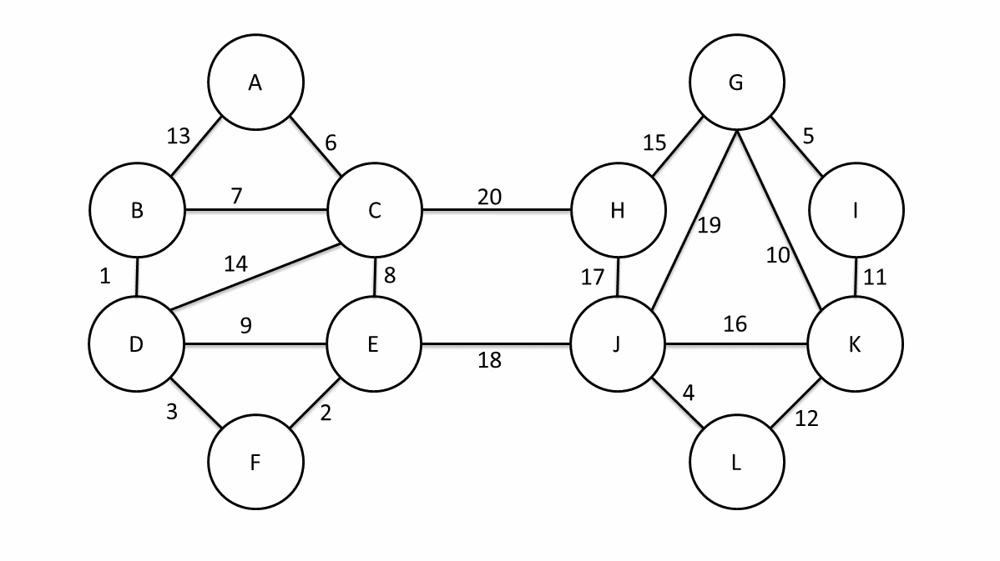
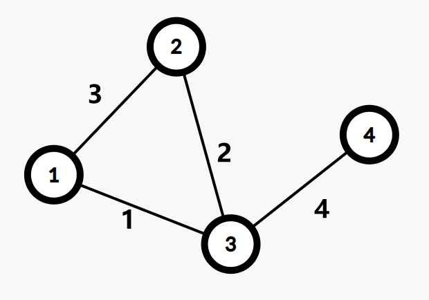

Mst
定义
在阅读下列内容之前，请务必阅读 图论相关概念 与 树基础 部分，并了解以下定义：
生成子图
生成树
我们定义无向连通图的 最小生成树 （Minimum Spanning Tree，MST）为边权和最小的生成树。
注意：只有连通图才有生成树，而对于非连通图，只存在生成森林。
Kruskal 算法
Kruskal 算法是一种常见并且好写的最小生成树算法，由 Kruskal 发明。该算法的基本思想是从小到大加入边，是个贪心算法。
前置知识
并查集 、贪心 、图的存储 。
实现
图示：
伪代码：
\begin{array}{ll}
1 & \textbf{Input. } \text{The edges of the graph } e , \text{ where each element in } e \text{ is } (u, v, w) \\
& \text{ denoting that there is an edge between } u \text{ and } v \text{ weighted } w . \\
2 & \textbf{Output. } \text{The edges of the MST of the input graph}.\\
3 & \textbf{Method. } \\
4 & result \gets \varnothing \\
5 & \text{sort } e \text{ into nondecreasing order by weight } w \\
6 & \textbf{for} \text{ each } (u, v, w) \text{ in the sorted } e \\
7 & \qquad \textbf{if } u \text{ and } v \text{ are not connected in the union-find set } \\
8 & \qquad\qquad \text{connect } u \text{ and } v \text{ in the union-find set} \\
9 & \qquad\qquad result \gets result\;\bigcup\ \{(u, v, w)\} \\
10 & \textbf{return } result
\end{array}
算法虽简单，但需要相应的数据结构来支持……具体来说，维护一个森林，查询两个结点是否在同一棵树中，连接两棵树。
抽象一点地说，维护一堆 集合 ，查询两个元素是否属于同一集合，合并两个集合。
其中，查询两点是否连通和连接两点可以使用并查集维护。
如果使用 O(m\log m) O(m\alpha(m, n)) O(m\log n) O(m\log m)
证明
思路很简单，为了造出一棵最小生成树，我们从最小边权的边开始，按边权从小到大依次加入，如果某次加边产生了环，就扔掉这条边，直到加入了 n-1
证明：使用归纳法，证明任何时候 K 算法选择的边集都被某棵 MST 所包含。
基础：对于算法刚开始时，显然成立（最小生成树存在）。
归纳：假设某时刻成立，当前边集为 F T e
如果 e T
否则，T+e F f
首先，f e f e
然后，f e T+e-f T
所以，T+e-f F
Prim 算法
Prim 算法是另一种常见并且好写的最小生成树算法。该算法的基本思想是从一个结点开始，不断加点（而不是 Kruskal 算法的加边）。
实现
图示：
具体来说，每次要选择距离最小的一个结点，以及用新的边更新其他结点的距离。
其实跟 Dijkstra 算法一样，每次找到距离最小的一个点，可以暴力找也可以用堆维护。
堆优化的方式类似 Dijkstra 的堆优化，但如果使用二叉堆等不支持 O(1) 不一定 实际跑得更快。
暴力：O(n^2+m)
二叉堆：O((n+m) \log n)
Fib 堆：O(n \log n + m)
伪代码：
\begin{array}{ll}
1 & \textbf{Input. } \text{The nodes of the graph }V\text{ ; the function }g(u, v)\text{ which}\\
& \text{means the weight of the edge }(u, v)\text{; the function }adj(v)\text{ which}\\
& \text{means the nodes adjacent to }v.\\
2 & \textbf{Output. } \text{The sum of weights of the MST of the input graph.} \\
3 & \textbf{Method.} \\
4 & result \gets 0 \\
5 & \text{choose an arbitrary node in }V\text{ to be the }root \\
6 & dis(root)\gets 0 \\
7 & \textbf{for } \text{each node }v\in(V-\{root\}) \\
8 & \qquad dis(v)\gets\infty \\
9 & rest\gets V \\
10 & \textbf{while } rest\ne\varnothing \\
11 & \qquad cur\gets \text{the node with the minimum }dis\text{ in }rest \\
12 & \qquad result\gets result+dis(cur) \\
13 & \qquad rest\gets rest-\{cur\} \\
14 & \qquad \textbf{for}\text{ each node }v\in adj(cur) \\
15 & \qquad\qquad dis(v)\gets\min(dis(v), g(cur, v)) \\
16 & \textbf{return } result
\end{array}
注意：上述代码只是求出了最小生成树的权值，如果要输出方案还需要记录每个点的 dis
证明
从任意一个结点开始，将结点分成两类：已加入的，未加入的。
每次从未加入的结点中，找一个与已加入的结点之间边权最小值最小的结点。
然后将这个结点加入，并连上那条边权最小的边。
重复 n-1
证明：还是说明在每一步，都存在一棵最小生成树包含已选边集。
基础：只有一个结点的时候，显然成立。
归纳：如果某一步成立，当前边集为 F T e
如果 e T
否则考虑 T+e f
首先，f e f e
然后，f e T+e-f
因此，e f T+e-f F
Boruvka 算法
接下来介绍另一种求解最小生成树的算法——Boruvka 算法。该算法的思想是前两种算法的结合。它可以用于求解 边权互不相同 的无向图的最小生成森林。（无向连通图就是最小生成树。）
为了描述该算法，我们需要引入一些定义：
定义 E' E' 连通块 表示一个点集 V'\subseteq V u v E'
定义一个连通块的 最小边 为它连向其它连通块的边中权值最小的那一条。
初始时，E'=\varnothing
计算每个点分别属于哪个连通块。将每个连通块都设为“没有最小边”。
遍历每条边 (u, v) u v u v
如果所有连通块都没有最小边，退出程序，此时的 E' E'
下面通过一张动态图来举一个例子（图源自 维基百科 ）：

当原图连通时，每次迭代连通块数量至少减半，算法只会迭代不超过 O(\log V) O(E\log V) 维基百科 ）
\begin{array}{ll}
1 & \textbf{Input. } \text{A graph }G\text{ whose edges have distinct weights. } \\
2 & \textbf{Output. } \text{The minimum spanning forest of }G . \\
3 & \textbf{Method. } \\
4 & \text{Initialize a forest }F\text{ to be a set of one-vertex trees} \\
5 & \textbf{while } \text{True} \\
6 & \qquad \text{Find the components of }F\text{ and label each vertex of }G\text{ by its component } \\
7 & \qquad \text{Initialize the cheapest edge for each component to "None"} \\
8 & \qquad \textbf{for } \text{each edge }(u, v)\text{ of }G \\
9 & \qquad\qquad \textbf{if } u\text{ and }v\text{ have different component labels} \\
10 & \qquad\qquad\qquad \textbf{if } (u, v)\text{ is cheaper than the cheapest edge for the component of }u \\
11 & \qquad\qquad\qquad\qquad\text{ Set }(u, v)\text{ as the cheapest edge for the component of }u \\
12 & \qquad\qquad\qquad \textbf{if } (u, v)\text{ is cheaper than the cheapest edge for the component of }v \\
13 & \qquad\qquad\qquad\qquad\text{ Set }(u, v)\text{ as the cheapest edge for the component of }v \\
14 & \qquad \textbf{if }\text{ all components'cheapest edges are "None"} \\
15 & \qquad\qquad \textbf{return } F \\
16 & \qquad \textbf{for }\text{ each component whose cheapest edge is not "None"} \\
17 & \qquad\qquad\text{ Add its cheapest edge to }F \\
\end{array}
习题
最小生成树的唯一性
考虑最小生成树的唯一性。如果一条边 不在最小生成树的边集中 ，并且可以替换与其 权值相同、并且在最小生成树边集 的另一条边。那么，这个最小生成树就是不唯一的。
对于 Kruskal 算法，只要计算为当前权值的边可以放几条，实际放了几条，如果这两个值不一样，那么就说明这几条边与之前的边产生了一个环（这个环中至少有两条当前权值的边，否则根据并查集，这条边是不能放的），即最小生成树不唯一。
寻找权值与当前边相同的边，我们只需要记录头尾指针，用单调队列即可在 O(\alpha(m))
例题：POJ 1679
次小生成树
非严格次小生成树
定义
在无向图中，边权和最小的满足边权和 大于等于 最小生成树边权和的生成树
求解方法
求出无向图的最小生成树 T M
遍历每条未被选中的边 e = (u,v,w) T u v e' = (s,t,w') T e e' M' = M + w - w' T'
对所有替换得到的答案 M'
如何求 u,v
我们可以使用倍增来维护，预处理出每个节点的 2^i 2^i
严格次小生成树
定义
在无向图中，边权和最小的满足边权和 严格大于 最小生成树边权和的生成树
求解方法
考虑刚才的非严格次小生成树求解过程，为什么求得的解是非严格的？
因为最小生成树保证生成树中 u v 不大于 其他从 u v
解决的办法很自然：我们维护到 2^i 严格次大边权 ，当用于替换的边的权值与原生成树中路径最大边权相等时，我们用严格次大值来替换即可。
这个过程可以用倍增求解，复杂度 O(m \log m)
代码
1
2
3
4
5
6
7
8
9
10
11
12
13
14
15
16
17
18
19
20
21
22
23
24
25
26
27
28
29
30
31
32
33
34
35
36
37
38
39
40
41
42
43
44
45
46
47
48
49
50
51
52
53
54
55
56
57
58
59
60
61
62
63
64
65
66
67
68
69
70
71
72
73
74
75
76
77
78
79
80
81
82
83
84
85
86
87
88
89
90
91
92
93
94
95
96
97
98
99
100
101
102
103
104
105
106
107
108
109
110
111
112
113
114
115
116
117
118
119
120
121
122
123
124
125
126
127
128
129
130
131
132
133
134
135
136
137
138
139
140
141
142
143
144
145
146
147
148
149
150
151
152
153
154
155 #include <algorithm> #include <iostream> const int INF = 0x3fffffff ; const long long INF64 = 0x3fffffffffffffffLL ; struct Edge { int u , v , val ; bool operator < ( const Edge & other ) const { return val < other . val ; } }; Edge e [ 300010 ]; bool used [ 300010 ]; int n , m ; long long sum ; class Tr { private : struct Edge { int to , nxt , val ; } e [ 600010 ]; int cnt , head [ 100010 ]; int pnt [ 100010 ][ 22 ]; int dpth [ 100010 ]; // 到祖先的路径上边权最大的边
int maxx [ 100010 ][ 22 ]; // 到祖先的路径上边权次大的边，若不存在则为 -INF
int minn [ 100010 ][ 22 ]; public : void addedge ( int u , int v , int val ) { e [ ++ cnt ] = ( Edge ){ v , head [ u ], val }; head [ u ] = cnt ; } void insedge ( int u , int v , int val ) { addedge ( u , v , val ); addedge ( v , u , val ); } void dfs ( int now , int fa ) { dpth [ now ] = dpth [ fa ] + 1 ; pnt [ now ][ 0 ] = fa ; minn [ now ][ 0 ] = - INF ; for ( int i = 1 ; ( 1 << i ) <= dpth [ now ]; i ++ ) { pnt [ now ][ i ] = pnt [ pnt [ now ][ i - 1 ]][ i - 1 ]; int kk [ 4 ] = { maxx [ now ][ i - 1 ], maxx [ pnt [ now ][ i - 1 ]][ i - 1 ], minn [ now ][ i - 1 ], minn [ pnt [ now ][ i - 1 ]][ i - 1 ]}; // 从四个值中取得最大值
std :: sort ( kk , kk + 4 ); maxx [ now ][ i ] = kk [ 3 ]; // 取得严格次大值
int ptr = 2 ; while ( ptr >= 0 && kk [ ptr ] == kk [ 3 ]) ptr -- ; minn [ now ][ i ] = ( ptr == -1 ? - INF : kk [ ptr ]); } for ( int i = head [ now ]; i ; i = e [ i ]. nxt ) { if ( e [ i ]. to != fa ) { maxx [ e [ i ]. to ][ 0 ] = e [ i ]. val ; dfs ( e [ i ]. to , now ); } } } int lca ( int a , int b ) { if ( dpth [ a ] < dpth [ b ]) std :: swap ( a , b ); for ( int i = 21 ; i >= 0 ; i -- ) if ( dpth [ pnt [ a ][ i ]] >= dpth [ b ]) a = pnt [ a ][ i ]; if ( a == b ) return a ; for ( int i = 21 ; i >= 0 ; i -- ) { if ( pnt [ a ][ i ] != pnt [ b ][ i ]) { a = pnt [ a ][ i ]; b = pnt [ b ][ i ]; } } return pnt [ a ][ 0 ]; } int query ( int a , int b , int val ) { int res = - INF ; for ( int i = 21 ; i >= 0 ; i -- ) { if ( dpth [ pnt [ a ][ i ]] >= dpth [ b ]) { if ( val != maxx [ a ][ i ]) res = std :: max ( res , maxx [ a ][ i ]); else res = std :: max ( res , minn [ a ][ i ]); a = pnt [ a ][ i ]; } } return res ; } } tr ; int fa [ 100010 ]; int find ( int x ) { return fa [ x ] == x ? x : fa [ x ] = find ( fa [ x ]); } void Kruskal () { int tot = 0 ; std :: sort ( e + 1 , e + m + 1 ); for ( int i = 1 ; i <= n ; i ++ ) fa [ i ] = i ; for ( int i = 1 ; i <= m ; i ++ ) { int a = find ( e [ i ]. u ); int b = find ( e [ i ]. v ); if ( a != b ) { fa [ a ] = b ; tot ++ ; tr . insedge ( e [ i ]. u , e [ i ]. v , e [ i ]. val ); sum += e [ i ]. val ; used [ i ] = 1 ; } if ( tot == n - 1 ) break ; } } int main () { std :: ios :: sync_with_stdio ( 0 ); std :: cin . tie ( 0 ); std :: cout . tie ( 0 ); std :: cin >> n >> m ; for ( int i = 1 ; i <= m ; i ++ ) { int u , v , val ; std :: cin >> u >> v >> val ; e [ i ] = ( Edge ){ u , v , val }; } Kruskal (); long long ans = INF64 ; tr . dfs ( 1 , 0 ); for ( int i = 1 ; i <= m ; i ++ ) { if ( ! used [ i ]) { int _lca = tr . lca ( e [ i ]. u , e [ i ]. v ); // 找到路径上不等于 e[i].val 的最大边权
long long tmpa = tr . query ( e [ i ]. u , _lca , e [ i ]. val ); long long tmpb = tr . query ( e [ i ]. v , _lca , e [ i ]. val ); // 这样的边可能不存在，只在这样的边存在时更新答案
if ( std :: max ( tmpa , tmpb ) > - INF ) ans = std :: min ( ans , sum - std :: max ( tmpa , tmpb ) + e [ i ]. val ); } } // 次小生成树不存在时输出 -1
std :: cout << ( ans == INF64 ? -1 : ans ) << '\n' ; return 0 ; }
瓶颈生成树
定义
无向图 G G
性质
最小生成树是瓶颈生成树的充分不必要条件。 即最小生成树一定是瓶颈生成树，而瓶颈生成树不一定是最小生成树。
关于最小生成树一定是瓶颈生成树这一命题，可以运用反证法证明：我们设最小生成树中的最大边权为 w w
例题
POJ 2395 Out of Hay
给出 n 个农场和 m 条边，农场按 1 到 n 编号，现在有一人要从编号为 1 的农场出发到其他的农场去，求在这途中他最多需要携带的水的重量，注意他每到达一个农场，可以对水进行补给，且要使总共的路径长度最小。
题目要求的就是瓶颈树的最大边，可以通过求最小生成树来解决。
最小瓶颈路
定义
无向图 G
性质
根据最小生成树定义，x 到 y 的最小瓶颈路上的最大边权等于最小生成树上 x 到 y 路径上的最大边权。虽然最小生成树不唯一，但是每种最小生成树 x 到 y 路径的最大边权相同且为最小值。也就是说，每种最小生成树上的 x 到 y 的路径均为最小瓶颈路。
但是，并不是所有最小瓶颈路都存在一棵最小生成树满足其为树上 x 到 y 的简单路径。
例如下图：

1 到 4 的最小瓶颈路显然有以下两条：1-2-3-4。1-3-4。
但是，1-2 不会出现在任意一种最小生成树上。
应用
由于最小瓶颈路不唯一，一般情况下会询问最小瓶颈路上的最大边权。
也就是说，我们需要求最小生成树链上的 max。
倍增、树剖都可以解决，这里不再展开。
Kruskal 重构树
定义
在跑 Kruskal 的过程中我们会从小到大加入若干条边。现在我们仍然按照这个顺序。
首先新建 n 0
每一次加边会合并两个集合，我们可以新建一个点，点权为加入边的边权，同时将两个集合的根节点分别设为新建点的左儿子和右儿子。然后我们将两个集合和新建点合并成一个集合。将新建点设为根。
不难发现，在进行 n-1 n
举个例子：
这张图的 Kruskal 重构树如下：
性质
不难发现，原图中两个点之间的所有简单路径上最大边权的最小值 = 最小生成树上两个点之间的简单路径上的最大值 = Kruskal 重构树上两点之间的 LCA 的权值。
也就是说，到点 x \leq val y
我们在 Kruskal 重构树上找到 x \leq val
如果需要求原图中两个点之间的所有简单路径上最小边权的最大值，则在跑 Kruskal 的过程中按边权大到小的顺序加边。
「LOJ 137」最小瓶颈路 加强版
NOI 2018 归程 首先预处理出来每一个点到根节点的最短路。
我们构造出来根据海拔的最大生成树。显然每次询问可以到达的节点是在最小生成树和询问点的最小边权 \geq p
根据 Kruskal 重构树的性质，这些节点满足均在一棵子树内同时为其所有叶子节点。
也就是说，我们只需要求出 Kruskal 重构树上每一棵子树叶子的权值 min 就可以支持子树询问。
询问的根节点可以使用 Kruskal 重构树上倍增的方式求出。
时间复杂度 O((n+m+Q) \log n)
build 本页面最近更新：更新历史 edit 发现错误？想一起完善？ 在 GitHub 上编辑此页！ people 本页面贡献者：Chrogeek, Enter-tainer, HeRaNO, Ir1d, Marcythm, ShadowsEpic, StudyingFather, Xeonacid, bear-good, billchenchina, diauweb, diauweb, greyqz, kawa-yoiko, ouuan, partychicken, sshwy, stevebraveman, zhouyuyang2002, renbaoshuo copyright 本页面的全部内容在 CC BY-SA 4.0 和 SATA